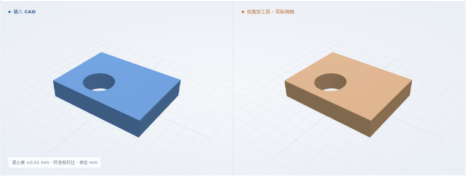
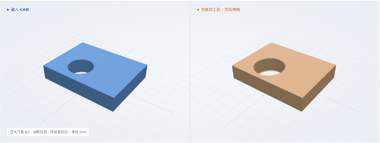

对称公差 ±0.1 mm
φ2.5 通孔 · 孔心 (3, 2) · 厚 1.5 mm
孔径数值通过最终体积 IoU99.9744%
要求：2.4–2.6 mm 仿真：2.49970–2.50019 mm
采样孔径带加数值保护带后仍位于要求范围内。 草案由合成纸卡编写数据生成，未运行模型自动转录。

全部结果均为软件仿真，未做真实切削。真实工艺卡整卡通过 0 份。工艺卡和判据多为开发方编写，未经工艺师傅批准。开发进度 →
新增：明确孔径公差从草案进入执行输入。复用通孔、通用 XYZ、8 × 6 × 1.5 mm 矩形坯与 6061-T6 标签。
2 例孔径通过，1 例无法判定；过大刀具反例超差。前三例目标和加工指令相同，公差不同，所以 IoU 相同也会得到不同的尺寸结论。均为合成测试，真实 PDF 自动转录与整卡验收仍未完成。
φ2.5 通孔 · 孔心 (3, 2) · 厚 1.5 mm
孔径数值通过要求：2.4–2.6 mm 仿真：2.49970–2.50019 mm
采样孔径带加数值保护带后仍位于要求范围内。 草案由合成纸卡编写数据生成，未运行模型自动转录。
φ2.5 通孔 · 孔心 (3, 2) · 厚 1.5 mm
孔径数值通过要求：2.42–2.62 mm 仿真：2.49970–2.50019 mm
采样孔径带加数值保护带后仍位于要求范围内。 草案由合成纸卡编写数据生成，未运行模型自动转录。
φ2.5 通孔 · 孔心 (3, 2) · 厚 1.5 mm
孔径无法判定要求：2.49–2.51 mm 仿真：2.49970–2.50019 mm
数值保护带大于公差，当前精度不足以判定；未放宽要求。 草案由合成纸卡编写数据生成，未运行模型自动转录。

φ2.5 通孔 · 孔心 (3, 2) · 厚 1.5 mm
孔径超差 · 预期反例要求：2.4–2.6 mm 仿真：2.99929–3.00019 mm
实际孔径明显超出要求，几何检查发现错误。 故意换成 φ3 刀具，绕过正常配置绑定，仅用于诊断。

可查看上方静态图或下载形状。
矩形坯 → 钻孔 → 提刀 → 目标 / 剩料比对
把名义值与上下偏差编译为孔径范围；逐项绑定 CAD 特征。漏项、冲突或编译后改判据会阻断。
原生重读 CAD 并生成钻孔路径；检查坐标、刀具和深度。公差不会偷偷改目标尺寸或刀具。
从完整矩形坯执行 NC。11 个截面测孔径，用草案传下来的范围判定；IoU 另外报告。